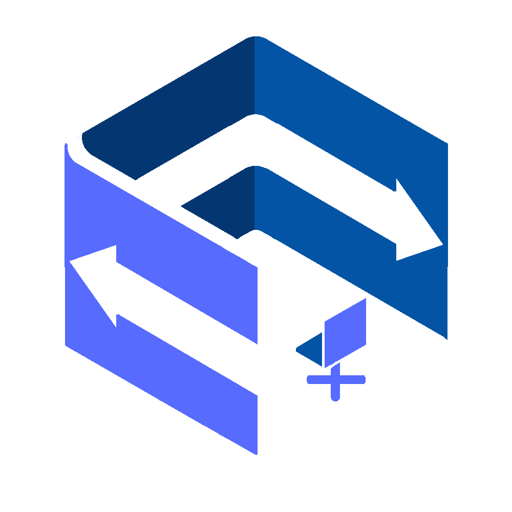

<div class="layout-topbar">
    <a class="layout-topbar-logo" routerLink="">
      <!--  -->
      
      <span>DeskSync</span>
    </a>
  
    <button
      #menubutton
      #targetEl
      class="p-link layout-menu-button layout-topbar-button"
      (click)="layoutService.onMenuToggle()"
    >
      <i class="pi pi-bars"></i>
    </button>
  
    <button
      #topbarmenubutton
      class="p-link layout-topbar-menu-button layout-topbar-button"
      (click)="layoutService.showProfileSidebar()"
    >
      <i class="pi pi-ellipsis-v"></i>
    </button>
  
    <div
      #topbarmenu
      class="layout-topbar-menu"
      [ngClass]="{
        'layout-topbar-menu-mobile-active':
          layoutService.state.profileSidebarVisible
      }"
    >
      <!-- <button class="p-link layout-topbar-button">
              <i class="pi pi-calendar"></i>
              <span>Calendar</span>
          </button> -->
      <button pTooltip="Report" tooltipPosition="left" class="p-link layout-topbar-button" type="button" (click)="openReportDialog()">
        <!-- <i
          class="pi pi-bell"
          *ngIf="notifications.length != 0"
          [value]="notifications.length.toString()"
          pBadge
        ></i> -->
        <i class="pi pi-exclamation-circle"></i>
        <span class="piText">Submit a report</span>
      </button>
      <!-- <button
        class="p-link layout-topbar-button"
        (click)="changeTheme(isDark ? 'lara-light' : 'lara-dark')"
      >
        <i class="pi pi-{{ isDark ? 'sun' : 'moon' }}"></i>
        <span class="piText">Theme</span>
      </button> -->
      <button pTooltip="Logout" tooltipPosition="left" class="p-link layout-topbar-button" (click)="logout()">
        <i class="pi pi-sign-out"></i>
        <span class="piText">Logout</span>
      </button>
    </div>
  </div>